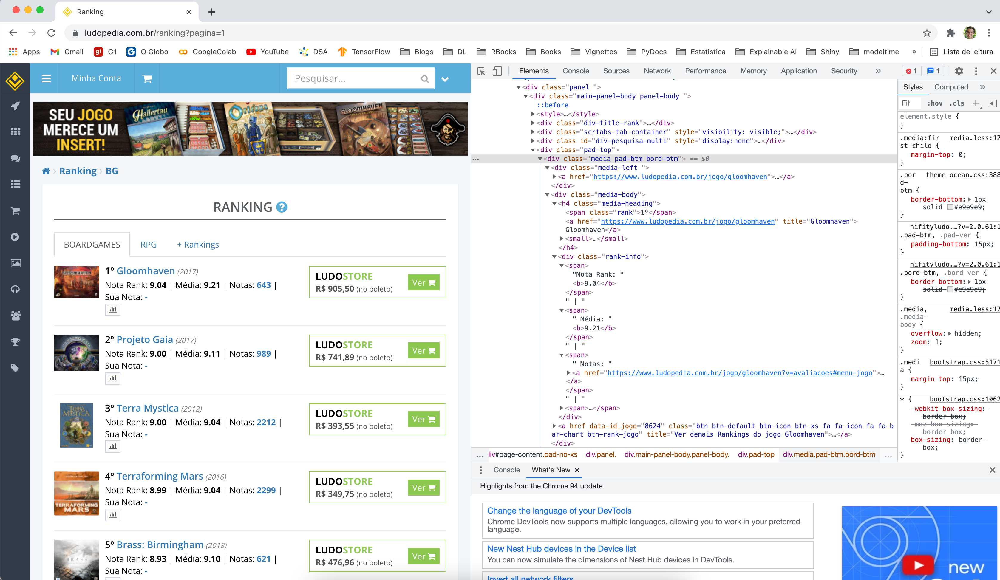

Eu já havia raspado a página do ranking do BoardGameGeek, e agora eu vou repetir a tarefa focando na página da Ludopedia. Meu objetivo com isso é comparar o ranking dos jogos de tabuleiro entre os dois sites, e determinar quão similares são as posições dos mesmos títulos entre eles.
include_graphics(path = 'images/imagem_1.jpg')
include_graphics(path = 'images/imagem_2.jpg')

include_graphics(path = 'images/imagem_3.jpg')